Welcome!
This page is the main page for Graphs: List Representation
This page is the main page for Graphs: List Representation
In the previous module, we introduced graphs and a matrix-based implementation. For this module, we will continue working with graphs and change our implementation to lists.
When using graphs, a lot of situational variation can occur. Some graphs can have a few nodes with many edges, many nodes with few edges, and so on. When we use the matrix implementation, we initialize a matrix with the number of columns and rows equal to the number of nodes. For example, if we have a graph with 20 nodes, our adjacency matrix would have 20 rows and 20 columns, resulting in 400 potential entries.
First let’s look at the implementation and then we will discuss when one may be better than the other.
In the matrix representation, we had an array of the node items. In the list representation, we will have an array of node objects. Each node object will keep track of the node item, the node index, and the outgoing edges.
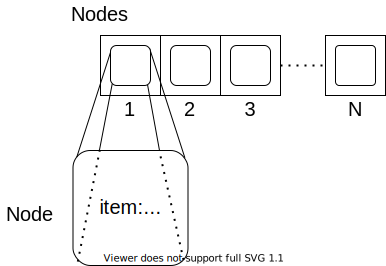
The item can be any object and the index will be a value within our capacity. The edges will be a list of pairs where the first entry is the index of the target node and the second entry is the weight of the edge.
Since each node will track its neighbors, it is important that we are consistent in our indexing of nodes. If our nodes were to get out of order, then our edges would as well.
Consider the following graph which we saw in the matrix representation.
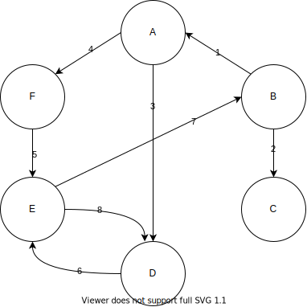
The following list of nodes depicts the graph above. We can see that each node object has the item and index.
If we look closer at the edges of the node with item A and index 1, we see that the set of edges is equal to [(4, 3.0), (6, 4.0)]. This corresponds to the fact that there are two edges with the source as node 1. The first ordered pair, (4, 3.0), means that there is an edge with source node 1 (A) and target node 4 (D) that has weight 3. We can confirm that in our graph we do have an edge from A to D with weight 3.
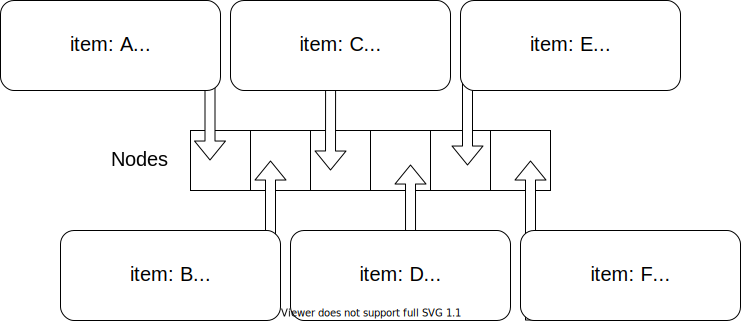
The following includes a couple of examples of loops within our graph.
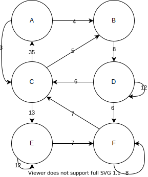
We have loops on nodes D, E, and F in our graph. Recall that a loop is an edge where the source and target are the same. For example, we have an edge with source D and target D that has weight 12. We see this in our list representation in the node object with item D and index 4, where we have the entry (4,12.0) in the edges.
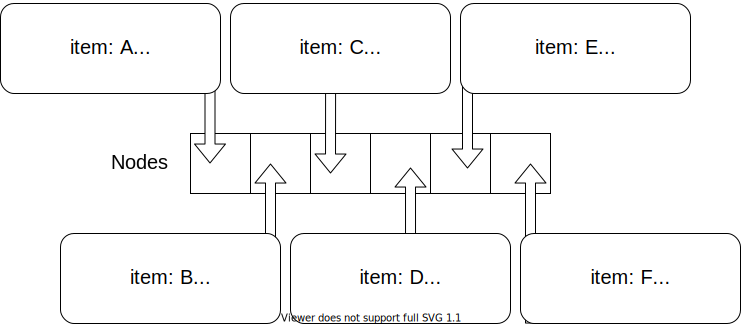
When considering which implementation to use, we need to consider the connectivity in our graph. The terms that we use to describe the connectedness are dense and sparse.
Dense Graph: A dense graph is a graph in which there is a large number of edges. Typically in a dense graph, the number of edges is close to the maximum number of edges.Sparse Graph: A sparse graph is a graph in which there is a small number of edges. In this case the number of edges is considerably less than the maximum number of edges.Intuitively, we can think of dense and sparse in terms of populations. For example, if 100 people lived in a city block, we can consider that to be densely populated. If 100 people lived in 100 square miles we can consider that to be sparsely populated.
Let’s look at some motivating examples to get an idea of how the different structures will handle these cases.
The following is a dense graph. In this case, our graph does have the maximum number of edges. This means that every node is connected to every other node including itself.
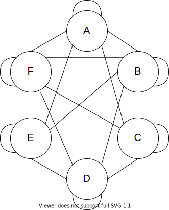 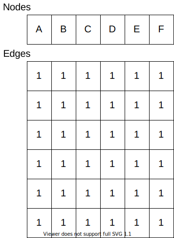 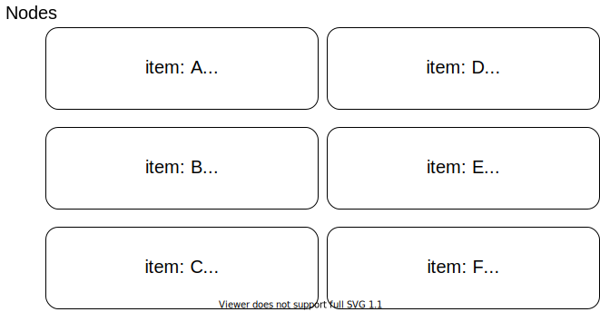
The following is a sparse graph.
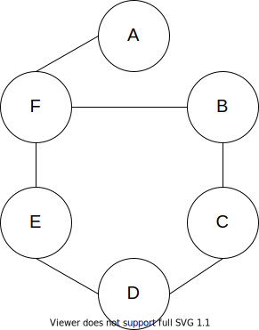 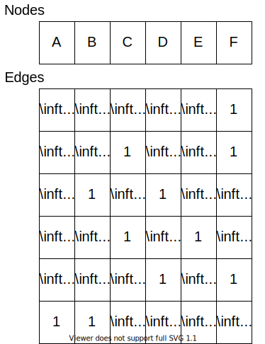 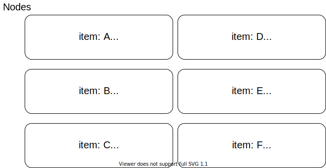
For dense graphs, the matrix representation will have better qualities as we are already setting aside space for the maximum number of edges. Sparse graphs are better represented in the list representation.
When we initialize the matrix implementation, we initialize the nodes attribute to have dimension equal to the capacity of the graph. The edges attribute is initialized to be a square matrix with dimension equal to capacity by capacity. Thus, if we have a sparse matrix, we are representing a lot of non-existent edges.
When we initialize the list implementation, we just have the nodes attribute which has dimension equal to the capacity and each node tracks its own edges. If we have a dense matrix and we are searching for an edge, we must loop through each edge from the target node to see if the edge exists. In the matrix representation, we can access that edge directly.
If the proportion of edges to the maximum number of edges is greater than 1/64, then the matrix representation is better in terms of space.
In this representation, we will have an array of graph node objects. We will first cover the UML for the graph node objects and then discuss the graph functions and attributes.

item: the value that the node contains.index: the index of the node.edges: ordered pairs (e, w) where this node is the source, e is the target node index, and w is the weight of the edge as a double.We will initialize a graph node with the given item and the given index. We initialize the edges attribute to be an empty list.
get item: Returns the graph node’s item.
get index: Returns the graph node’s index.
get edges: Returns the graph node’s edges.
get edge: From the source node, we will call the get edge function with the index of the target node as input. This will return the edge weight.
function GETEDGE(TARINDEX)
for EDGE in nodes EDGES
if the first element in EDGE is TARINDEX
return the second element in EDGE
return infinity
Working with the edges in our graph becomes slightly more complicated in the list representation. Previously, we were able to go right to the entry in our adjacency matrix and update it. Since each node keeps track of its own edges in no particular order, we must loop through each entry of the edges attribute to find a potential edge.
add edge: From the source node, we will call the add edge function with the target node as input as well as the weight. First, we will attempt to remove the edge. We need to do this as we do not want duplicate edges in our graph. Then we will add the ordered pair to the edges attribute.function ADDEDGE(TARINDEX, WEIGHT)
call REMOVEEDGE(TARINDEX) on this node
append (TARINDEX, WEIGHT) to this nodes EDGES
remove edge: From the source node, we will call the remove edge function with the target node as input. This will return true if it was successful and false if not.function REMOVEEDGE(TARINDEX)
for EDGE in nodes EDGES
if the first element in EDGE is TARINDEX
remove EDGE from EDGES
return true
return false
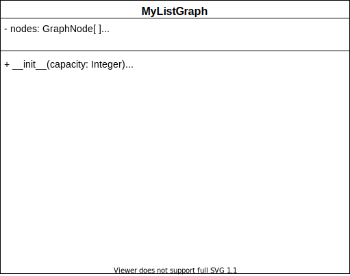
nodes: This will keep track of the nodes which are in our graph as well as the node values. The nodes can have any type of value such as numbers, characters, and even other data structures.size: This will keep track of the number of nodes that are active in our graph.Upon initialization, we will initialize nodes to be an empty array with dimension capacity and size to be zero as we start with no actual nodes.
get nodes: returns a list of the nodes with their respective indexes. This will be the same logic from our matrix graph.function GETNODES()
LIST = []
for NODE in NODES
if NODE has a VALUE
append (VALUE, INDEX) to LIST
return LIST
get edges: returns a list of the edges in the format (source, target, weight).function GETEDGES()
LIST = []
for NODE in NODES
if NODE is not empty
for EDGE in NODE EDGES
TAR = first entry of EDGE
WEIGHT = second entry of EDGE
append (NODE,TAR,WEIGHT) to LIST
return LIST
get node: returns the node with the given index. If the index is within the possible range, then we return the value of that node. This will be the same logic from our matrix graph.
find node: returns the index of the given node. We iterate through our nodes and if we find that value, then we return the index. Otherwise, return -1. This will be the same logic from our matrix graph.
get edge: returns the weight of the edge between the given indexes of the source node and target node. If one or both of the indexes are out of range, then we should return infinity. From the source node object, we will call the graph node get edge function on the target index.
function GETEDGE(SRC,TAR)
if SRC and TAR are between 0 and capacity
SRCNODE = the node at index SRC of the NODES attribute
WEIGHT = call the graph node GETEDGE from SRCNODE on TAR
return WEIGHT
else
return infinity
get capacity: returns the maximum number of nodes we are allowed to have. Upon initialization, we will have a fixed number of possible nodes in our node array. We can simply return the size of this array. This will be the same logic from our matrix graph.
get size: returns the size attribute. This will be the same logic from our matrix graph.
get number of edges: returns the number of edges currently in the graph.
function NUMBEROFEDGES()
COUNT = 0
for NODE in NODES
if NODE is not empty
for EDGE in NODE EDGES
increment COUNT by one
return COUNT
get neighbors: returns the neighbors of the given node. We will access our row adjacency matrix that corresponds to the node and return the indexes and values of those entries which are not infinity.function GETNEIGHBORS(IDX)
SRCNODE = the node at index IDX of the NODES attribute
if SRCNODE is not empty
return SRCNODE's edges
else
return nothing
add node: will add a node to the graph with the given value if our graph still has room. Finding a location for the node will be the same procedure as the matrix graph. If we find an open spot to add the node, we will instantiate a new graph node and insert it into the nodes attribute.function ADDNODE(VALUE)
IDX = -1
for NODE in NODES
if NODE is VALUE
return NODE's index
if NODE has no entry and IDX is -1
IDX = NODE's index
if IDX is not -1
NEWNODE = graph node with VALUE and IDX for input
add NEWNODE to NODES at position IDX
increment SIZE
return IDX
remove node: will remove a node to the graph with the given value if our graph has the node. We will set the node to be empty. When we set the node to be empty, we clear all of the outgoing edges, so we just need to loop through the other nodes removing any possible incoming edges.function REMOVENODE(IDX)
if IDX is in the range of our indexes
if NODES at position IDX is not empty
set NODES at IDX to be empty
decrement SIZE by one
for NODE in NODES
if NODE has no entry
from NODE call the graph node REMOVEEDGE function on IDX
return true
else
return false
else
return false
add edge: will add an edge with the given weight which goes from the source node to the target nodefunction ADDEDGE(SRC, TAR, WEIGHT)
if SOURCE and TARGET are both in the range of our node indexes
SRCNODE = the node at index SRC of the NODES attribute
if SRCNODE is not empty
from SRCNODE call the graph node ADDEDGE with TAR and WEIGHT as input
return true
else
return false
else
return false
remove edge: will remove the edge which goes from the source node to the target nodefunction REMOVEEDGE(SOURCE, TARGET)
if SOURCE and TARGET are both in the range of our node indexes
SRCNODE = the node at index SRC of the NODES attribute
if SRCNODE has no entry
RET = SRCNODE call the graph node REMOVEEDGE with TAR as input
return RET
else
return false
else
return false
add undirected edge: will add two edges with the given weight between the two given nodesfunction ADDUNDIRECTEDEDGE(NODE1, NODE2, WEIGHT)
RES = ADDEDGE(NODE1, NODE2, WEIGHT)
RES = RES and ADDEDGE(NODE2, NODE1, WEIGHT)
return RES
remove undirected edge: will remove two edges between the two given nodes.function REMOVEUNDIRECTEDEDGE(NODE1, NODE2)
RES = REMOVEEDGE(NODE1, NODE2)
RES = RES and REMOVEEDGE(NODE2, NODE1)
return RES
In this module, we introduced a new way to store the graph data structure. Thus, we now have two ways to work with graphs, in lists and in matrices:
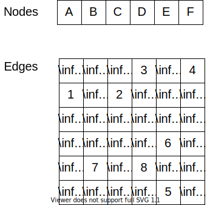
While these methods show the same information, there are cases when one way may be more desirable than the other.
We discussed how a sparse graph is better suited for a list representation and a dense graph is better suited for a matrix representation. We also touched on how working with the edges in a list representation can add complexity to our edge functions. If we are needing to access edge weights or update edges frequently, a matrix representation would be a good choice – especially if we have a lot of nodes.